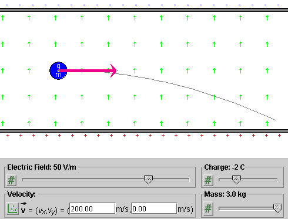
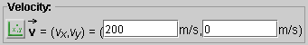
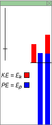

Instructions
This page is designed to get you started using the applet. The applet should be open. The step-by-step instructions on this page are to be done in the applet. You may need to toggle back and forth between instructions and applet if your screen space is limited.

The applet simulates the conditions encountered by a charged particle between the plates of an infinitely extended parallal-plate capacitor. The applet shows only the portion of the capacitor that fits inside the applet window. See Figure 1 below. The two plates of the capacitor are charged uniformly with electric charge of opposite sign. The electric field associated with these charges is uniform inside the capacitor and zero outside the capacitor. The particle's motion is restricted to the region inside the capacitor.

Figure 1
Exercise 1. RESET  the applet to restore the applet's default
settings.
the applet to restore the applet's default
settings.
In the applet's default state, the Electric Field slider is at 50 V/m, the green arrows indicating the direction of the electric field are pointing upward, and there are positive charges on the lower plate and negative charges on the upper plate.
Change the Electric Field slider setting from 50 V/m to 100 V/m, and observe a proportional increase in the charge density on the plates (doubling of the charge density).
Change the setting of the Electric Field slider to a negative value, say, -50 V/m, and observe reversal in the direction of the electric field and reversal in the signs of the charges on the upper and lower plates of the capacitor.
Exercise 2. Adjust the Electric Field slider to -50
V/m. The direction of the electric field as indicated by the
green arrows will be downward. Display the Vector panel by
selecting the Vectors button  , and select "Force" on the
panel.
, and select "Force" on the
panel.
If the Charge slider is still at its default setting of 3 C, the electric force acting on the charged particle is downward. It is indicated by a black arrow pointing downward.
Raise the setting of the Charge slider to 5 C, and observe a proportional increase in the length of the black arrow representing the force.
Change the setting of the Charge slider to a negative value, say, -3 C, and observe reversal in the direction of the force. The force should point upward.
Display the Data box by selecting the Data button
 .
.
Again, vary the particle's charge with the Charge slider, and observe the corresponding changes in the force components Fx and Fy displayed in the Data box.
Exercise 3. Vary the setting of the Mass slider. Observe that the black force vector is not affected.
On the Vector panel, deselect "Force" and select "Acceleration" instead. The particle's acceleration vector is represented by an orange arrow. Again vary the particle's mass, and observe that the magnitude of the acceleration is inversely proportional to the mass.
Display the Data box, and observe the changes in the acceleration components ax and ay as you vary the mass.

Exercise 1. RESET the applet.
Drag the particle to (x,y) = (100,100) m. Display the Data box while dragging the particle in order to observe x and y.
Hint. You may want to hold the SHIFT key down while moving the particle to its exact position, to restrict the direction of motion to horizontal or vertical. Displaying the Grid while dragging may help also.
Exercise 2. Set the particle's velocity to (vx,vy) = (200, 0) m/s.
To do so, click on the mode selector button to the left of the velocity data fields until the Cartesian entry mode is selected. The button and the labels of the two fields should look as in Figure 2 below.

Figure 2
Display the velocity vector by selecting "Velocity" in the Vector panel. The velocity vector corresponding to the velocity value above is displayed by the applet as in Figure 3 below.
Figure 3
Exercise 3. Make sure the particle's initial position and velocity are still as in Exercises 1 and 2. Set the electric field and the particle's charge and mass to the values indicated in Figure 2. PLAY the motion. The particle should follow the trajectory shown in Figure 2.
Exercise 4. REWIND the applet. Keep all settings of
the applet the same, except for the direction of the initial
velocity. To change the direction, click on the mode
selection button to the left of the velocity data fields
until you reach the polar-positive mode, which is indicated
by the icon  . Change the velocity direction angle from 0 to
20o. PLAY the motion. You should obtain a
parabolic trajectory, first rising and then decending.
. Change the velocity direction angle from 0 to
20o. PLAY the motion. You should obtain a
parabolic trajectory, first rising and then decending.
Exercise 1. RESET the applet. Display the force vector (in black) by checking "Force" on the Vector panel.
Drag the particle throughout the region between the two capacitor plates. Observe that the force vector remains unchanged in magnitude and direction.
Vary the settings of the three sliders, and observe the force vector. The force is proportional to the electric field and the particle charge, but is independent of the particle mass.
Exercise 2. RESET the applet. Display the Data box.
Make the following settings:
With these settings, the three energy columns in the Data box should look as in Figure 4 below.

Figure 4
Exercise 3. The blue middle column in the Energy box represents the particle's potential energy in the electric field. Move the particle upward, in the direction of the field, and observe that the potential energy increases. Move the particle downward, opposite to the field, and observe that the potential energy decreases.
Reverse the particle's charge from -1 C to 1 C, and observe that the value of the potential energy changes from positive to negative. The thin line across the three energy columns indicates the zero level of energy. According to the Data box, the potential energy changes from 5775 J to -5775 J.
Reverse the electric field from 50 V/m to -50 V/m, and observe that the potential energy reverses its value again.
Vary the particle mass, and observe that this has no effect on the potential energy.
Exercise 4. Restore the applet settings from Exercise 2. Display the velocity vector.
Vary the magnitude of the velocity by dragging the tip of the velocity vector. Observe the changes in the first energy column, which is entirely in red. It represents the particle's kinetic energy, which is proportional to the particle's speed.
Make the particle speed so large that the kinetic energy column grows beyond the upper boundary of the Energy box. Then adjust the scale of all energy columns by dragging the zoom slider in the top left corner of the energy box downward. If you drag it down far enough, you should be able to reduce the size of the kinetic energy bar so that it fits entirely into the Energy box.
Exercise 5. Vary the settings of the three sliders, and observe the changes in the kinetic energy column. The column should grow in size in proportion to the mass, but be independent of the electric field and the charge of the particle.
Exercise 6. The third column in the Energy box is a composite of the blue potential energy and red kinetic energy columns. The total height of this column represents the total energy E of the particle in the electric field.
Make the same changes as before, i.e., change the position and speed of the charge, the charge and the mass of the charge, and the electric field, and observe that the blue and red portions of the last column are always identical in size to the individual blue (potential energy) and red (kinetic energy) columns.
Restore the settings made in Exercise 2, and PLAY the motion. Observe that the total height of the third column remains the same throughout the motion, indicating that the energy E is constant. At the same time, the other two columns are changing in size, in such a manner that an increase in the size of one is compensated by an equal decrease in the size of the other.